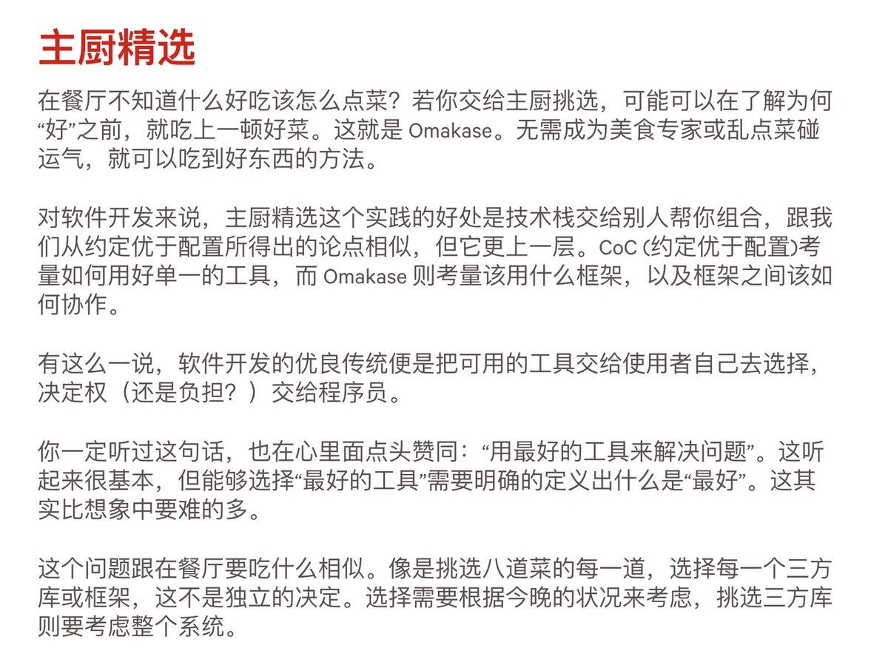

Wilf Lin
@Wilf_Lin
我正在把omarchy上的各种东西往我的arch里面搬
有些东西做的真的不错，而另一些我有更好的替代品或者自己的实现

赖嘉伟Gary
@lai_jia_wei
发现 @dhh 做的 Omarchy 在中文圈有一点火的迹象。
随之有人批评说 Omarchy 太臃肿，预装了一大堆 DHH 个人喜欢的软件和配置。
其实 Omarchy 也源自 Rails 理念之一：omakase（主厨精选）。与其说是个人偏好，不如说是个人品味。美好的产品，从来都带有创作者的审美投射。
https://t.co/8E3KzV5DKQ https://t.co/hKP8fI5JjG